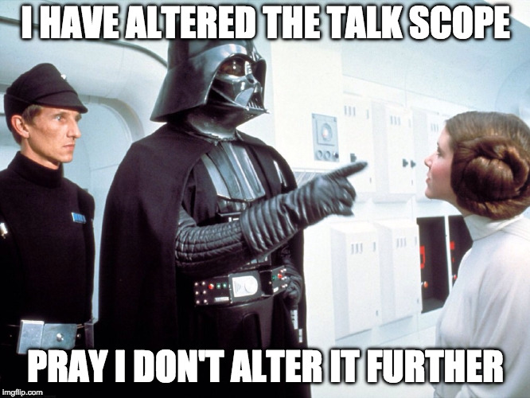
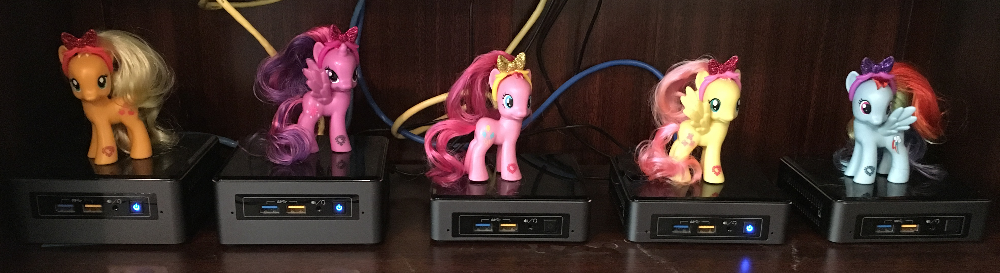
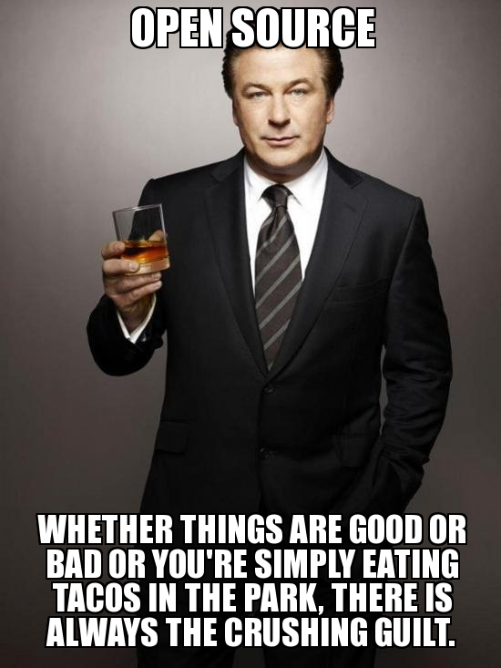
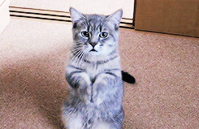
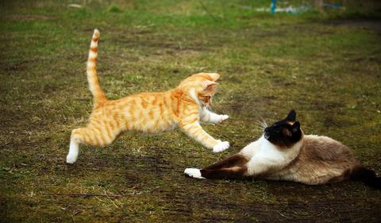
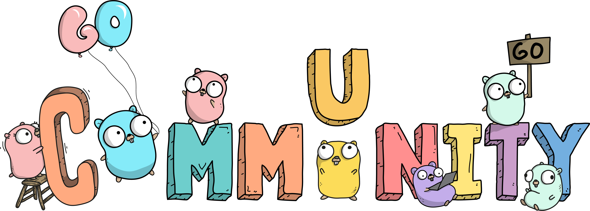

GopherSource
An open-source adventure for gophers
Carolyn Van Slyck

My Background
Your Background
Why do you want to do open source?
Will contributing to open source ...
help me land a job?
help me keep my job?
be a good learning opportunity?
make me internet famous?
provide security for my career?
Is anything with a permissive license open source?
CorporateSource
a.k.a "source code available"
Personal Projects
Community Projects
Why I choose open source
Why I joined a community
Why Open Source: Take 2
Impact
Remote Friendly
Portable Network
❤️ Community ❤️
Why You May Not Enjoy Open Source
Politics
Velocity
Domain
Scarcity
Personality
My Little Cluster Story

carolynvs.com/my-little-cluster
Contribute - Code
Bug Fixes
Features
Build Work
Bumping dependency versions
Improving local developer experience
CI - Code linters
CI - Windows
Contribute - Test
Test coverage
Integration / End-to-End tests
Testability
Contribute - Doc
Getting Started
Core Concepts
Configuration
Troubleshooting
Meta (contributing, CoC, reviewing, issue templates)
Website Framework/Build
Website Design
Inline comments/doc
Answered questions -> FAQ
writethedocs.org
docslikecode.com
Contribute - Project Management
Attend community meetings
Taking notes, recordings
Labeling issues
Closing stale issues or fixed issues
Tracking milestones
Putting together releases
Contribute - Help
Reading issues as they come and commenting where you can
Answering questions
Find gaps in the doc
Identifying duplicates, related questions or previous answers
Reproduce a bug report
Trying out fixes
Chatting with people on slack, helping other users
Providing feedback on design proposals
Ask clarifying questions on a code review
Experience reports
Contribution Ladder
Reasons to Pick a Project
You use it
You are learning it
You need to fix it
You want to influence it
Lurk
Your First PR
Your First PR ... Day 2
Casual Contributor
Member
Maintainer
Climbing Back Down the Ladder
The Crushing Guilt

(Re)set Your Expectations
What is "Normal"?
Asking for Help

Kind Code Reviews
Time Distortion Fields
People are hard

Build Trust
The Art of the Follow-on PR
Remember Your Goals
Check Your Ego
Seek Compromise...
... Know Your Boundaries
Resources
GitHub Open Source Guide
Roads and Bridges:
The unseen labor behind our digital infrastructure
Stop Drinking Spoiled Milk
Next Steps
gophersource.com

Thank you
@carolynvs
Slides @
carolynvs.com/go-oss101